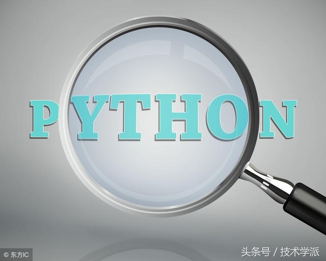

<!DOCTYPE html><html><head><meta charset="utf-8"><title>C++、Java、Python，哪个更适合编程初学者入门？ | 技术学派</title><meta name="viewport" content="width=device-width,initial-scale=1,maximum-scale=1"><meta name="keywords" content="IT培训, Python, 大数据, 人工智能, Web前端, PHP, C"><meta name="description" content="对于一个零基础想转行做IT的小白来说，学什么编程语言入门比较好呢？相信这是困扰很多想成为程序员的第一个问题。面对各种各样的编程语言，究竟哪一种最适合零基础的人学习呢？很多刚入门的新手可能都听说过C++，Java，Python这三门编程语言，那我们不可能去一一学习，其实我们不需要每种编程语言都熟悉了解，在当前形式下，只要掌握时下对自己来说最需要的编程语言就可以了。但这三门语言如何选择，很多人却无从下"><meta name="keywords" content="C"><meta property="og:type" content="article"><meta property="og:title" content="C++、Java、Python，哪个更适合编程初学者入门？"><meta property="og:url" content="http://www.JiShuXuePai.com/blog/学习答疑/学习答疑/C++、Java、Python，哪个更适合编程初学者入门？/index.html"><meta property="og:site_name" content="技术学派"><meta property="og:description" content="对于一个零基础想转行做IT的小白来说，学什么编程语言入门比较好呢？相信这是困扰很多想成为程序员的第一个问题。面对各种各样的编程语言，究竟哪一种最适合零基础的人学习呢？很多刚入门的新手可能都听说过C++，Java，Python这三门编程语言，那我们不可能去一一学习，其实我们不需要每种编程语言都熟悉了解，在当前形式下，只要掌握时下对自己来说最需要的编程语言就可以了。但这三门语言如何选择，很多人却无从下"><meta property="og:locale" content="zh-CN"><meta property="og:image" content="http://www.jishuxuepai.com/blog/学习答疑/学习答疑/C++、Java、Python，哪个更适合编程初学者入门？/01.jpg"><meta property="og:updated_time" content="2018-07-09T03:57:50.000Z"><meta name="twitter:card" content="summary"><meta name="twitter:title" content="C++、Java、Python，哪个更适合编程初学者入门？"><meta name="twitter:description" content="对于一个零基础想转行做IT的小白来说，学什么编程语言入门比较好呢？相信这是困扰很多想成为程序员的第一个问题。面对各种各样的编程语言，究竟哪一种最适合零基础的人学习呢？很多刚入门的新手可能都听说过C++，Java，Python这三门编程语言，那我们不可能去一一学习，其实我们不需要每种编程语言都熟悉了解，在当前形式下，只要掌握时下对自己来说最需要的编程语言就可以了。但这三门语言如何选择，很多人却无从下"><meta name="twitter:image" content="http://www.jishuxuepai.com/blog/学习答疑/学习答疑/C++、Java、Python，哪个更适合编程初学者入门？/01.jpg"><link rel="stylesheet" href="/libs/bootstrap/bootstrap-grid.css"><link rel="stylesheet" href="/libs/font-awesome/css/font-awesome.min.css"><link rel="stylesheet" href="/libs/titillium-web/styles.css"><link rel="stylesheet" href="/libs/source-code-pro/styles.css"><link rel="stylesheet" href="/css/style.css"><script src="/libs/jquery/jquery.min.js"></script><link rel="stylesheet" href="/libs/lightgallery/css/lightgallery.min.css"><link rel="stylesheet" href="/libs/justified-gallery/justifiedGallery.min.css"><script>var _hmt=_hmt||[];!function(){var e=document.createElement("script");e.src="//hm.baidu.com/hm.js?4c1bd812de3c30edbaa2b803c66f0a04";var t=document.getElementsByTagName("script")[0];t.parentNode.insertBefore(e,t)}()</script></head></html><body><div id="wrap"><header id="header"><div id="header-outer" class="outer"><div class="container"><div class="container-inner"><div id="header-title"><h1 class="logo-wrap"><a href="/" class="logo"></a></h1></div><div id="header-inner" class="nav-container"><a id="main-nav-toggle" class="nav-icon fa fa-bars">菜单</a><div class="nav-container-inner"><ul id="main-nav"><li class="main-nav-list-item"><a class="main-nav-list-link" href="/">主页</a></li><li class="main-nav-list-item"><a class="main-nav-list-link" href="/edu/index.html">学编程</a></li><li class="main-nav-list-item"><a class="main-nav-list-link" href="/blog/">博客</a></li><li class="main-nav-list-item"><a class="main-nav-list-link" href="/tips.html">学习建议</a></li><li class="main-nav-list-item"><a class="main-nav-list-link" href="/about.html">关于</a></li></ul><nav id="sub-nav"><div id="search-form-wrap"><form class="search-form"><input type="text" class="ins-search-input search-form-input" placeholder="搜索"> <button type="submit" class="search-form-submit"></button></form><div class="ins-search"><div class="ins-search-mask"></div><div class="ins-search-container"><div class="ins-input-wrapper"><input type="text" class="ins-search-input" placeholder="想要查找什么..."> <span class="ins-close ins-selectable"><i class="fa fa-times-circle"></i></span></div><div class="ins-section-wrapper"><div class="ins-section-container"></div></div></div></div><script>window.INSIGHT_CONFIG={TRANSLATION:{POSTS:"文章",PAGES:"页面",CATEGORIES:"分类",TAGS:"标签",UNTITLED:"(未命名)"},ROOT_URL:"/",CONTENT_URL:"/content.json"}</script><script src="/js/insight.js"></script></div></nav></div></div></div></div></div></header><div class="container"><div class="main-body container-inner"><div class="main-body-inner"><section id="main"><div class="main-body-header"><h1 class="header"><a class="page-title-link" href="/categories/学习答疑/">学习答疑</a><div class="author"></div></h1></div><div class="main-body-content"><article id="post-学习答疑/C++、Java、Python，哪个更适合编程初学者入门？" class="article article-single article-type-post" itemscope itemprop="blogPost"><div class="article-inner"><header class="article-header"><h1 class="article-title" itemprop="name">C++、Java、Python，哪个更适合编程初学者入门？</h1></header><div class="article-meta"><div class="article-date"><a href="/blog/学习答疑/学习答疑/C++、Java、Python，哪个更适合编程初学者入门？/" class="article-date"><time datetime="2018-07-09T03:50:06.000Z" itemprop="datePublished">2018-07-09</time></a></div><div class="article-tag"><i class="fa fa-tag"></i> <a class="tag-link" href="/tags/C/">C</a></div></div><div class="article-entry" itemprop="articleBody"><p>对于一个零基础想转行做IT的小白来说，学什么编程语言入门比较好呢？相信这是困扰很多想成为程序员的第一个问题。面对各种各样的编程语言，究竟哪一种最适合零基础的人学习呢？</p><p>很多刚入门的新手可能都听说过C++，Java，Python这三门编程语言，那我们不可能去一一学习，其实我们不需要每种编程语言都熟悉了解，在当前形式下，只要掌握时下对自己来说最需要的编程语言就可以了。但这三门语言如何选择，很多人却无从下手。</p><p><strong>具体如何选择哪种语言就要看你学编程的目的是什么了。</strong></p><h3 id="Java"><a href="#Java" class="headerlink" title="Java"></a>Java</h3><p>目前几乎涉猎领域最广的语言，Java常常跟”企业”联系在一起, 因为具备一些很好的语言特性, 以及丰富的框架, 在企业应用中最被青睐。Java可以用来做网站开发，可以做游戏开发。目前市场对Java开发者的需求量很大，而且Java很好找工作。Java具有面向对象，稳定，平台无关等特点。使用Java编程无需考虑底层是怎么处理的，通通用对象操作，入门也很简单。目前，从市场上的需求来看，对于好的Java程序员的需求，仍然是供不应求的。</p><p></p><h3 id="C"><a href="#C" class="headerlink" title="C++"></a>C++</h3><p>C++是在C语言基础上有了初级的面向对象的思想，不建议一开始就上手C++。刚开始学习C可能会觉得很难，因为C有很多跟底层打交道的东西，就相当于高级汇编。你要自己去分配内存，回收垃圾，了解程序是怎么在你计算机上运行的。学习C语言，就像你刚生下来学会爬行一样。只有会爬了，才能走的更稳，跑的更快。对C语言有了一定了解后，再学习其他语言，像Python之类的都很简单了。语言都是一通百通的，何况那些高级语言都有很强大的库可供调用，不必事事躬亲。但是，如果是彻头彻尾的小白，还是建议从Python开始入门。</p><p></p><h3 id="Python"><a href="#Python" class="headerlink" title="Python"></a>Python</h3><p>Python是一种面向对象的解释型计算机程序设计语言，语法简洁清晰，又具有丰富和强大的库，它又叫做作胶水语言。Python比较简单，容易学习和掌握，对于没有编程基础的人来说比较容易上手。Python很适合做个爬虫爬数据之类的，很适合用于网络的辅助，抓数据，找资源，利用python是非常好的。Python开发快，简单易学，没有很多技巧，好玩又有趣，很适合培养兴趣。对于零基础的同学来说Python是一个不错的选择。</p><p></p><p>其实现在大多公司招人目的就是能干活，能快速干活、解决问题就能拿高薪，不过如果没有全面的知识体系很难通过面试。 程序员最主要的还是得有产品思路，不要知道领导指一下动一下，这样技术再好，工资照样拿不高，产品的目的是为了市场，有市场的产品再小白也能赚钱。</p><p>另外，俗话说“好记性不如烂笔头”，对于初学者而言，养成每天写笔记总结，在技术博客上更新的习惯非常重要。笔记虽然很零散，但只要写，就相当于复习巩固了当天所学内容。同样内容也不在多，哪怕一句话都行。有时候只要开始写第一句话，就会接着写第二句、第三句……第N句。</p><h3 id="总结："><a href="#总结：" class="headerlink" title="总结："></a>总结：</h3><p>C++对于初学者自学有点难。想当初在大学里读的是计算机软件专业，一学期下来，能够掌握C++的不超过5%。</p><p>Java对于初学者来说也不是很容易，特别是面向对象的概念，在编程初学者连逻辑线性思维都没掌握的时候，是不太容易理解的。而且编译型语言都比较麻烦一点。</p><p>Python是解释性语言，环境配置简单，语法简洁明了。开发速度快，简单易学，没有很多技巧，好玩又有趣，很适合入门编程员培养兴趣。</p></div><footer class="article-footer"><a data-url="http://www.JiShuXuePai.com/blog/学习答疑/学习答疑/C++、Java、Python，哪个更适合编程初学者入门？/" data-id="cjjfie5y90033a8fyu3554wmi" class="article-share-link"><i class="fa fa-share"></i>分享到</a><script>!function(n){n("body").on("click",function(){n(".article-share-box.on").removeClass("on")}).on("click",".article-share-link",function(t){t.stopPropagation();var e,a=n(this),o=a.attr("data-url"),r=encodeURIComponent(o),i="article-share-box-"+a.attr("data-id"),s=a.offset();if(n("#"+i).length){if((e=n("#"+i)).hasClass("on"))return void e.removeClass("on")}else{var l=['<div id="'+i+'" class="article-share-box">','<input class="article-share-input" value="'+o+'">','<div class="article-share-links">','<a href="https://twitter.com/intent/tweet?url='+r+'" class="article-share-twitter" target="_blank" title="Twitter"></a>','<a href="https://www.facebook.com/sharer.php?u='+r+'" class="article-share-facebook" target="_blank" title="Facebook"></a>','<a href="http://pinterest.com/pin/create/button/?url='+r+'" class="article-share-pinterest" target="_blank" title="Pinterest"></a>','<a href="https://plus.google.com/share?url='+r+'" class="article-share-google" target="_blank" title="Google+"></a>',"</div>","</div>"].join("");e=n(l),n("body").append(e)}n(".article-share-box.on").hide(),e.css({top:s.top+25,left:s.left}).addClass("on")}).on("click",".article-share-box",function(t){t.stopPropagation()}).on("click",".article-share-box-input",function(){n(this).select()}).on("click",".article-share-box-link",function(t){t.preventDefault(),t.stopPropagation(),window.open(this.href,"article-share-box-window-"+Date.now(),"width=500,height=450")})}(jQuery)</script></footer></div></article><section id="comments"><div id="gitalk_frame"></div></section></div></section><aside id="sidebar"><a class="sidebar-toggle" title="Expand Sidebar"><i class="toggle icon"></i></a><div class="sidebar-top"><p>关注我 :</p><ul class="social-links"><li><a class="social-tooltip" title="火星时代" href="http://edu.hxsd.com/edunew/topics/webfull/index.html" target="_blank"><i class="icon fa fa-dribbble"></i></a></li><li><a class="social-tooltip" title="weibo" href="#" target="_blank"><i class="icon fa fa-weibo"></i></a></li><li><a class="social-tooltip" title="rss" href="/atom.xml" target="_blank"><i class="icon fa fa-rss"></i></a></li></ul></div><nav id="article-nav"><a href="/blog/学习答疑/学习答疑/新手程序员不知道的小技巧？你知道多少？/" id="article-nav-newer" class="article-nav-link-wrap"><strong class="article-nav-caption">下一篇</strong><p class="article-nav-title">新手程序员不知道的小技巧？你知道多少？</p><i class="icon fa fa-chevron-right" id="icon-chevron-right"></i> </a><a href="/blog/学习答疑/学习答疑/作为程序员，你的未来职业规划是什么？/" id="article-nav-older" class="article-nav-link-wrap"><strong class="article-nav-caption">上一篇</strong><p class="article-nav-title">作为程序员，你的未来职业规划是什么？</p><i class="icon fa fa-chevron-left" id="icon-chevron-left"></i></a></nav><div class="widgets-container"><div class="widget-wrap widget-list"><h3 class="widget-title">分类</h3><div class="widget"><ul class="category-list"><li class="category-list-item"><a class="category-list-link" href="/categories/animate/">animate</a><span class="category-list-count">17</span></li><li class="category-list-item"><a class="category-list-link" href="/categories/git/">git</a><span class="category-list-count">1</span></li><li class="category-list-item"><a class="category-list-link" href="/categories/html/">html</a><span class="category-list-count">2</span></li><li class="category-list-item"><a class="category-list-link" href="/categories/js/">js</a><span class="category-list-count">5</span></li><li class="category-list-item"><a class="category-list-link" href="/categories/php/">php</a><span class="category-list-count">3</span></li><li class="category-list-item"><a class="category-list-link" href="/categories/vue/">vue</a><span class="category-list-count">1</span></li><li class="category-list-item"><a class="category-list-link" href="/categories/学习答疑/">学习答疑</a><span class="category-list-count">41</span></li><li class="category-list-item"><a class="category-list-link" href="/categories/插件资源库/">插件资源库</a><span class="category-list-count">4</span></li></ul></div></div><link rel="stylesheet" href="/css/tech/toc.css"><div class="widget-wrap widget-list widget-toc"><h3 class="widget-title">目录</h3><div class="widget"><div class="toc"></div><link rel="stylesheet" href="https://cdnjs.cloudflare.com/ajax/libs/tocbot/3.0.5/tocbot.css"><script src="https://cdnjs.cloudflare.com/ajax/libs/tocbot/3.0.5/tocbot.min.js"></script><script>$(function(){$(".main-body-content").find("h1,h2,h3").each(function(t){$(this).attr("id")||$(this).attr("id","list"+t)}),tocbot.init({tocSelector:".toc",contentSelector:".main-body-content",headingSelector:"h1, h2, h3",collapseDepth:2,positionFixedSelector:".widget-toc",fixedSidebarOffset:595,includeHtml:!1})})</script></div></div><div class="widget-wrap widget-list"><h3 class="widget-title">标签</h3><div class="widget"><ul class="tag-list"><li class="tag-list-item"><a class="tag-list-link" href="/tags/C/">C</a><span class="tag-list-count">2</span></li><li class="tag-list-item"><a class="tag-list-link" href="/tags/go/">go</a><span class="tag-list-count">1</span></li><li class="tag-list-item"><a class="tag-list-link" href="/tags/php/">php</a><span class="tag-list-count">1</span></li><li class="tag-list-item"><a class="tag-list-link" href="/tags/python/">python</a><span class="tag-list-count">17</span></li><li class="tag-list-item"><a class="tag-list-link" href="/tags/web前端/">web前端</a><span class="tag-list-count">2</span></li></ul></div></div><div class="widget-wrap widget-float"><h3 class="widget-title">标签云</h3><div class="widget tagcloud"><a href="/tags/C/" style="font-size:15px">C</a> <a href="/tags/go/" style="font-size:10px">go</a> <a href="/tags/php/" style="font-size:10px">php</a> <a href="/tags/python/" style="font-size:20px">python</a> <a href="/tags/web前端/" style="font-size:15px">web前端</a></div></div><div class="widget-wrap widget-list"><h3 class="widget-title">链接</h3><div class="widget"><ul><li><a href="http://edu.hxsd.com/edunew/topics/webfull/index.html">火星时代</a></li></ul></div></div></div></aside><script>$(function(){$(window).scroll(function(){240<=$(document).scrollTop()?($("#sidebar .sidebar-toggle").addClass("fix"),"block"==$("#sidebar .sidebar-toggle").css("display")&&$(".is-position-fixed").css("top","35px")):$("#sidebar .sidebar-toggle").removeClass("fix")})})</script></div></div></div><footer id="footer"><div class="top"><div class="inner"><div class="list"><div class="left clearfix"><dl><dt>关于我们</dt><dd><a href="/about.html" target="_blank">公司简介</a></dd><dd><a href="edu/index.html" target="_blank">联系我们</a></dd></dl><dl><dt>校区攻略</dt><dd><a href="edu/index.html" target="_blank">校区环境</a></dd><dd><a href="edu/index.html" target="_blank">住宿攻略</a></dd><dd><a href="edu/index.html" target="_blank">来校路线</a></dd></dl><dl><dt>课程培训</dt><dd><a href="edu/python.html" target="_blank">Python</a></dd><dd><a href="edu/python.html" target="_blank">Web前端</a></dd><dd><a href="edu/python.html" target="_blank">PHP</a></dd><dd><a href="edu/python.html" target="_blank">人工智能</a></dd><dd><a href="edu/python.html" target="_blank">大数据</a></dd></dl><dl><dt>常见问答</dt><dd><a href="edu/index.html" target="_blank">学费学时</a></dd><dd><a href="edu/index.html" target="_blank">学习方法</a></dd></dl></div></div><div class="tel"><tel>176-0025-8815</tel><span>北京市海淀区杏石口路81号火星时代大厦</span></div><div class="weixin"><div class="w1"> <span>头条号</span></div><div class="w1"> <span>官方微信</span></div></div></div></div><div class="bot">Copyright 2018 技术学派 京ICP备15015508号-3</div></footer><link rel="stylesheet" href="https://unpkg.com/gitalk/dist/gitalk.css"><script src="https://unpkg.com/gitalk/dist/gitalk.min.js"></script><script>var gitalk=new Gitalk({clientID:"2fbbb9980b49019d99a7",clientSecret:"152dd10e83ef6595761ea2185304f9ac8263573f",repo:"jsxp",owner:"li-kang",admin:["li-kang"]});gitalk.render("gitalk_frame")</script><script src="/libs/lightgallery/js/lightgallery.min.js"></script><script src="/libs/lightgallery/js/lg-thumbnail.min.js"></script><script src="/libs/lightgallery/js/lg-pager.min.js"></script><script src="/libs/lightgallery/js/lg-autoplay.min.js"></script><script src="/libs/lightgallery/js/lg-fullscreen.min.js"></script><script src="/libs/lightgallery/js/lg-zoom.min.js"></script><script src="/libs/lightgallery/js/lg-hash.min.js"></script><script src="/libs/lightgallery/js/lg-share.min.js"></script><script src="/libs/lightgallery/js/lg-video.min.js"></script><script src="/libs/justified-gallery/jquery.justifiedGallery.min.js"></script><script src="/js/main.js"></script></div></body>